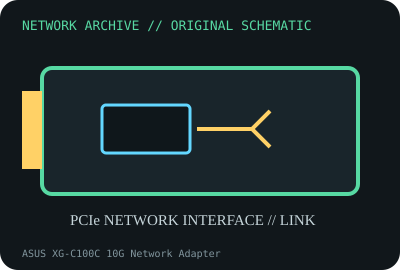

[ MODEL-SPECIFIC NETWORK HARDWARE ]
ASUS XG-C100C 10G Network Adapter
Single-port 10GBASE-T PCIe adapter for multigigabit copper. Confirm exact product label and revision before applying specifications.

IDENTIFICATION: Confirm manufacturer PID, hardware revision, device ID or module suffix. Nominal standards/link rates are not measurements of payload performance.
Exact specifications and compatibility
| Dedicated subcategory | Ethernet adapters |
|---|---|
| Exact product/model | ASUS XG-C100C 10G Network Adapter |
| Bus, ports and physical interface | PCIe 3.0 x4; one RJ-45 port; low-profile bracket included in supported packages. |
| PHY, radio or protocol | Marvell/Aquantia AQC107 controller; auto-negotiates 10G/5G/2.5G/1G/100MBASE-T as supported by peer and driver. |
| Nominal rate (not measured) | Up to 10Gb/s nominal over copper; not an observed application transfer rate. |
| Measured throughput | No measured benchmark is claimed for a physical specimen. A valid result must record host/peer, link partner, media/cable, driver/firmware, traffic pattern, test tool and duration. |
| Drivers, OS and firmware | ASUS support provides Windows drivers; Linux support is kernel/atlantic-driver dependent. Check exact device ID and driver release. |
| Compatibility | PCIe x4 electrical slot, airflow around heatsink, and Cat 6A cabling for full 100m 10GbE; Cat 5e may negotiate lower NBASE-T rates. |
| Variant warning | XG-C100C original adapter differs from later XG-C100C V2 and OEM AQC107 cards; inspect revision and VID:PID before firmware/driver choice. |
Model and revision notes
XG-C100C original adapter differs from later XG-C100C V2 and OEM AQC107 cards; inspect revision and VID:PID before firmware/driver choice.
ASUS support provides Windows drivers; Linux support is kernel/atlantic-driver dependent. Check exact device ID and driver release.
PCIe x4 electrical slot, airflow around heatsink, and Cat 6A cabling for full 100m 10GbE; Cat 5e may negotiate lower NBASE-T rates.
Archival, ESD and preservation notes
Archive revision, heatsink, MAC and driver version. Avoid pressing the heatsink; use ESD-safe handling and maintain airflow in operation.
Document source URL, access date, document revision and specimen label/condition. Preserve without credentials or private configuration.
Primary manufacturer and standards sources
- ASUS XG-C100C product specificationsPrimary manufacturer or standards documentation; verify exact SKU and host revision.
- ASUS XG-C100C support and downloadsPrimary manufacturer or standards documentation; verify exact SKU and host revision.
- IEEE 802.3 Ethernet standardsPrimary manufacturer or standards documentation; verify exact SKU and host revision.
Manufacturer statements cover the named part or its documented product family; the exact labeled revision and vendor compatibility list take precedence.